본 포스트는 서울대학교 컴퓨터공학부 시스템 프로그래밍(System Programming, M1522.000800, Fall 2026) 강의 자료 중 9강 — Memory Abstraction: Dynamic Memory Allocation II (총 49장)를 바탕으로, 강의를 처음 듣는 독자도 논리적 흐름을 따라갈 수 있도록 재구성한 것입니다. 원본 슬라이드는 영문으로 작성되어 있으며, 첫머리에서 일부 슬라이드를 Princeton University COS217 강의에서 가져왔다고 밝히고 있습니다. 동적 메모리 할당을 다루는 두 회차 중 Part II: Detailed K&R Implementation & Optimizations에 해당하고(Part I은 8강 Basic Concepts & K&R Implementation), 본문의 대섹션 구분은 강의의 네 구획 슬라이드(Details of the K&R Heap Manager → Optimizations Related to Assignment 3 → Perils and Pitfalls → Summary)를 그대로 따랐습니다.
한 줄 요약 (TL;DR)
“빈 메모리에 빈 메모리의 장부를 적는다 — 힙 관리자의 모든 설계는 이 한 가지 결정에서 출발합니다.”
힙 관리자는 자유 블록마다 시작 주소·크기·다음 블록을 기억해야 하지만, 그 기록을 담으려고
malloc을 부를 수는 없습니다. 힙을 관리하는 코드가 바로 자기 자신이기 때문입니다. 해법은 어차피 비어 있는 자유 블록 안에 그 정보를 직접 적는 것이고, K&R 할당자는 이것을 주소 순으로 정렬된 원형 단일 연결 리스트, first fit(next fit) 탐색, 꼬리를 잘라 주는 분할, free 시 위·아래 이웃과의 병합으로 구현합니다. 코드가 단순한 대신malloc과free가 모두 리스트를 선형 탐색해야 한다는 약점이 남는데, 강의는 과제 3을 위해 이를 두 단계로 걷어냅니다. 블록 양 끝에 헤더와 푸터를 두고 자유 블록을 이중 연결하면 메모리상의 이웃을 상수 시간에 찾아 병합할 수 있어free가 \(O(1)\)이 되고, 자유 블록을 크기별 bin으로 나누면malloc이 비슷한 크기의 블록만 보면 됩니다. 마지막으로 강의는 할당자를 쓰는 쪽에서 생기는 일곱 가지 메모리 버그 — 잘못된 포인터 역참조부터 메모리 누수까지 — 를 코드로 보여 주고, gdb·mtrace·valgrind로 그것을 잡는 방법을 정리합니다.
1. K&R 힙 관리자의 세부 구현 (Details of the K&R Heap Manager)
8강(Dynamic Memory Allocation I)에서는 K&R식 할당자의 윤곽 — 기본 크기의 배수로 할당하고, 자유 블록을 연결 리스트로 관리하며, 처음 만나는 충분히 큰 블록을 잘라 쓰고, 리스트를 원형으로 잇고 주소 순으로 유지한다 — 을 살펴보았습니다. 이번 장은 그 윤곽을 포인터 한 칸 단위까지 내려가 따라갑니다. 여기서 K&R은 Kernighan과 Ritchie의 The C Programming Language에 실린 malloc/free 예제 구현을 가리킵니다.
1.1 구현상의 난제 (An Implementation Challenge)
힙 관리자를 실제로 짜려고 하면 첫 줄부터 막히는 지점이 있습니다.
- 자유 블록마다 필요한 정보
- 메모리 블록의 시작 주소
- 자유 블록의 길이
- 자유 리스트(free list)에서 다음 블록을 가리키는 포인터
- 이 정보를 어디에 둘 것인가?
- 자유 블록의 개수를 미리 알 수 없습니다. 프로그램이 무엇을 어떤 순서로 요청하고 반납하느냐에 따라 블록은 쪼개지고 합쳐지며 수시로 늘고 줍니다.
- 그러니 크기가 정해진 전역 배열 같은 곳에는 담을 수 없고, 정보를 힙(heap)에 저장해야 합니다.
- 그런데 이 코드가 바로 힙을 관리하는 코드입니다!
- 이 정보를 담을 공간을 얻으려고
malloc()을 부를 수 없습니다. - 다 쓴 공간을 돌려주려고
free()를 부를 수도 없습니다.
- 이 정보를 담을 공간을 얻으려고
malloc의 구현 안에서 malloc을 부르면, 그 호출이 다시 장부를 적을 공간을 요구하며 같은 자리로 되돌아옵니다. 힙 관리자는 힙 위에 장부를 두어야 하지만, 힙을 쓰는 표준 경로는 이용할 수 없는 처지입니다.
1.2 자유 블록 안에 정보를 저장하기 (Store Information in the Free Block)
- 해법: 정보를 블록 안에 직접 저장합니다.
- 어차피 그 메모리는 아무 용도로도 쓰이지 않고 있기 때문입니다.
- 그리고 이렇게 하면 자료구조가 필요에 따라 늘고 줄 수 있습니다.
두 번째 불릿이 이 해법의 진짜 장점입니다. 장부의 항목 하나(= 자유 블록 하나에 대한 기록)가 필요해지는 순간은 자유 블록이 하나 생기는 순간이고, 그 블록은 자기 기록을 담을 자리를 스스로 가지고 옵니다. 자유 블록이 사라지면(할당되면) 기록도 더는 필요 없습니다. 장부의 크기가 자유 블록의 수를 저절로 따라가므로, 장부를 위해 공간을 따로 예약하거나 반납할 일이 없습니다.
이 결정에는 대가도 있습니다. 할당자의 자료구조가 사용자에게 내준 메모리 바로 옆에 놓이게 되므로, 사용자 프로그램이 자기 블록의 경계를 넘어 쓰면 할당자의 장부가 그대로 망가집니다. 3장의 메모리 버그들이 유독 치명적인 이유가 여기서 이미 예고됩니다.
1.3 암묵적 자유 리스트: 허수아비 접근 (Implicit Free List: Strawman’s Approach)
가장 단순한 장부부터 봅니다.
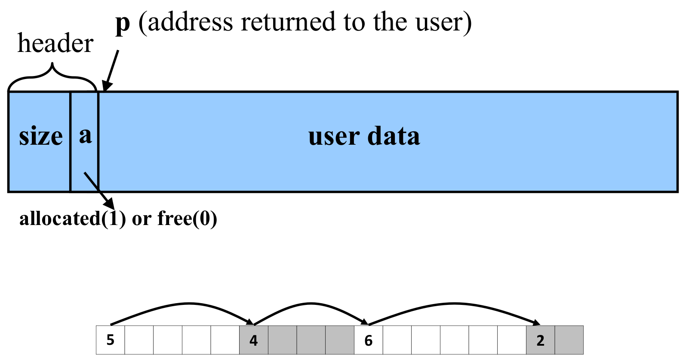
- 헤더(header): 크기(size) + 할당/자유 비트(allocated/free bit), 포인터는 없습니다.
- 구현은 단순하지만 매우 비효율적입니다 — 특히 힙이 거의 다 할당된 상태에서 그렇습니다.
- K&R의 방식은 아니며, 슬라이드는 자세한 내용을 ’chapter 9.9.6’으로 넘깁니다(CS:APP, Computer Systems: A Programmer’s Perspective의 Implicit Free Lists 절).
왜 ’암묵적(implicit)’인가. 자유 블록끼리를 잇는 포인터가 따로 없습니다. 대신 모든 블록이 헤더에 자기 크기를 적어 두므로, 어느 블록의 헤더 주소 \(h\)를 알면 다음 블록의 헤더는
\[ h_{\text{next}} = h + \mathrm{size}(h) \]
에서 곧바로 구해집니다. 블록 전체가 크기 필드를 통해 암묵적으로 한 줄로 이어져 있는 셈이고, 자유 리스트는 그 줄에서 할당 비트가 0인 것만 골라낸 부분입니다.
왜 느린가. 자유 블록을 찾으려면 이 줄을 따라 모든 블록을 하나씩 밟아 가야 합니다. 그림 아래쪽 힙에서 크기 6짜리 요청을 처리한다면 5(자유, 너무 작음) → 4(할당됨) → 6(자유, 적합)의 순서로 세 블록을 거치는데, 그중 4는 애초에 후보가 될 수 없는 블록입니다. 탐색 비용은
\[ T_{\text{implicit}} = O(\text{전체 블록 수}) \]
이고, 힙이 거의 다 찼다면 거쳐 가는 블록 대부분이 이런 헛걸음입니다.
1.4 명시적 자유 리스트: 포인터를 가진 블록 헤더 (Explicit Free List - Block Headers with a Pointer)
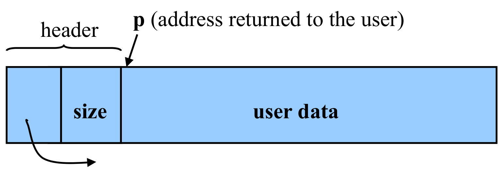
- 모든 자유 블록은 헤더를 가지며, 헤더에는 다음이 들어 있습니다.
- 다음 자유 블록을 가리키는 포인터(즉, 다음 자유 블록의 주소)
- 그 자유 블록의 크기
K&R 할당자는 이 방식을 씁니다. 헤더에 포인터가 생기면서 자유 블록끼리 명시적으로 연결되고, 탐색은 할당된 블록을 거치지 않고 자유 블록만 따라갑니다.
| 암묵적 자유 리스트 | 명시적 자유 리스트 (K&R) | |
|---|---|---|
| 헤더 내용 | 크기 + 할당 비트 | 크기 + 다음 자유 블록 포인터 |
| 무엇이 연결되는가 | 모든 블록 (크기로, 암묵적으로) | 자유 블록만 (포인터로, 명시적으로) |
malloc의 탐색 비용 |
\(O(\text{전체 블록 수})\) | \(O(\text{자유 블록 수})\) |
두 가지를 짚어 둡니다.
- 할당된 블록도 헤더를 유지합니다. 사용자에게 반환되는 주소
p가 헤더 바로 뒤라는 점에 주목하십시오. 블록이 할당된 뒤에도 헤더는 그 앞에 그대로 남아 있고, 나중에free가 그 헤더에서 블록 크기를 읽어 냅니다. 사용자가free에 크기를 넘기지 않아도 되는 이유가 이것입니다. - 포인터 칸은 자유 블록일 때만 의미가 있습니다. 할당된 블록은 리스트에 없으므로, 그동안 포인터 칸의 값은 쓰이지 않습니다.
1.5 자유 리스트: 원형 연결 리스트 (Free List: Circular Linked List)
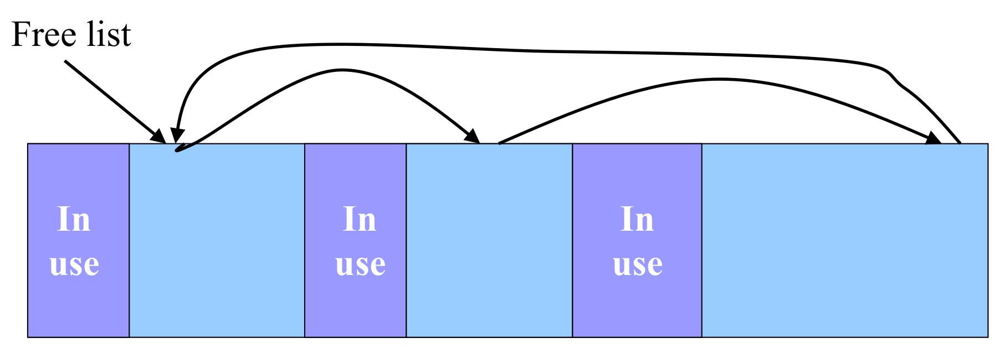
- 자유 블록들을 서로 연결합니다 — 예: 원형 연결 리스트(circular linked list).
- 리스트를 주소 오름차순으로 유지합니다 — 인접한 자유 블록을 병합(coalescing)하기가 쉬워집니다.
두 설계 결정은 각각 다른 문제를 풉니다.
- 원형인 이유(8강): 리스트의 어느 원소든 시작점이 될 수 있고, ’끝’을 특별히 처리할 필요가 없습니다. 그래서 지난번 탐색이 멈춘 자리에서 이어서 탐색할 수 있습니다(1.6절의 next fit).
- 주소 순인 이유: 리스트에서 이웃한 두 자유 블록은 메모리에서도 가장 가까운 자유 블록입니다. 그러므로 해제되는 블록이 자유 블록과 맞닿아 있는지 보려면 리스트상의 앞뒤 원소 두 개만 확인하면 됩니다(1.13절).
- 대가(8강): 새로 해제된 블록을 올바른 자리에 끼워 넣어야 하므로
free가 비싸집니다. 이 대가가 1.17절의 약점이자 2장의 출발점입니다.
1.6 malloc: 최초 적합 알고리즘 (Malloc: First-Fit Algorithm)
| 이름 | 가리키는 것 |
|---|---|
p |
탐색 중인(또는 찾아낸) 자유 블록의 헤더 |
prev |
리스트에서 p 바로 앞 자유 블록의 헤더 |
p->next |
p의 헤더에 적힌 다음 자유 블록 포인터 |
p+1 |
p의 헤더 바로 뒤, 즉 사용자 데이터의 시작 |
ap |
사용자가 free(ap)로 넘긴 주소 (= 사용자 데이터의 시작) |
bp |
해제할 블록의 헤더 (= ap에서 헤더 한 칸 앞) |
수식에서는 p->next를 \(\mathrm{next}(p)\)로, p의 헤더에 적힌 블록 크기를 \(\mathrm{size}(p)\)로 적습니다. 블록 크기는 바이트가 아니라 단위(unit)의 개수로 적히며(8강의 ‘기본 크기의 배수’), K&R에서는 헤더 하나의 크기가 곧 한 단위입니다. 주소 덧셈도 모두 이 단위 기준이어서, 예컨대 \(p + \mathrm{size}(p)\)는 \(p\)에서 블록 크기만큼 떨어진 주소입니다.
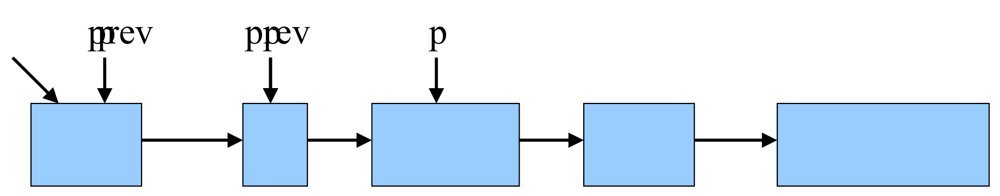
- 리스트의 처음에서 시작합니다.
- 리스트를 차례로 따라갑니다 — 이때 이전 원소를 가리키는 포인터를 함께 유지합니다.
- 충분히 큰 첫 블록에 도달하면 멈춥니다.
- 리스트를 손보고(patch up the list),
- 사용자에게 포인터를 반환합니다.
- 다음 번 탐색은 이전 포인터에서 시작합니다 — 이를 다음 적합(next fit)이라고 부릅니다.
왜 prev를 달고 다니는가. 리스트는 단일 연결이어서 각 블록은 다음 블록만 압니다. 찾아낸 블록 p를 리스트에서 떼어 내려면 p를 가리키던 포인터, 즉 prev의 다음 포인터를 고쳐야 하는데, p에서 거꾸로 prev를 찾아갈 방법이 없습니다. 그래서 탐색하는 동안 한 칸 뒤를 따라오는 포인터를 유지합니다.
’리스트를 손본다’는 것은 찾은 블록의 크기에 따라 달라지며, 이어지는 두 절이 그 두 경우입니다.
다음 적합(next fit). 매번 같은 자리에서 탐색을 시작하면, 앞쪽 블록들을 잘라 쓰고 남은 작은 조각들을 매번 다시 훑게 됩니다. 지난 탐색이 끝난 자리에서 이어 가면 그런 헛걸음이 줄고, 8강의 표현대로 뒤쪽에서 ‘충분히 큰’ 블록을 만날 가능성이 커집니다. 원형 리스트이므로 어디서 시작하든 한 바퀴를 돌면 모든 자유 블록을 한 번씩 보게 됩니다.
1.7 malloc 첫 번째 경우: 꼭 맞는 블록 (Malloc: First Case: Perfect Fit)
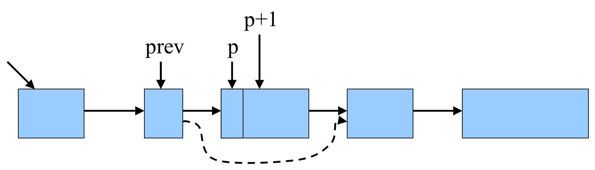
- 처음 찾은 블록이 꼭 맞는(perfect fit) 경우라고 합시다.
- 블록을 리스트에서 제거합니다.
- 이전 자유 블록과 다음 자유 블록을 연결합니다 —
prev->next = p->next. - 현재 블록을 사용자에게 반환하되 헤더는 건너뜁니다 —
p + 1.
p + 1은 1바이트 뒤가 아닙니다
p가 헤더 타입을 가리키는 포인터라면, C의 포인터 산술에서 p + 1은 주소를 p가 가리키는 타입의 크기만큼, 즉 헤더 하나만큼 옮깁니다. 그래서 p + 1이 정확히 ’헤더를 건너뛴 사용자 데이터의 시작’이 됩니다. 반대로 free는 사용자에게 받은 주소를 헤더 포인터로 보고 한 칸 빼서 헤더로 돌아갑니다(1.9절).
포인터 산술이 바이트가 아니라 원소 단위로 움직인다는 이 규칙은 할당자를 짧고 읽기 쉽게 만들어 주지만, 3.4절에서는 같은 규칙을 오해한 코드가 메모리를 덮어쓰는 버그로 다시 등장합니다.
1.8 malloc 두 번째 경우: 큰 블록 (Malloc: Second Case: Big Block)
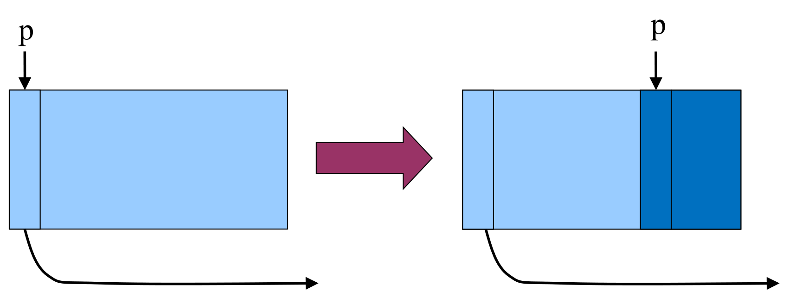
- 블록이 요청보다 큰 경우라고 합시다.
- 자유 블록을 두 블록으로 나눕니다.
- 앞쪽 블록(이제 더 작아진)은 자유 리스트에 그대로 둡니다.
- 뒤쪽 블록을 사용자에게 할당합니다.
- 보너스: 연결을 조작할 필요가 없습니다.
수로 적어 보겠습니다. 자유 블록의 헤더가 \(h\)에 있고 크기가 \(S\) 단위이며, 요청을 헤더까지 포함해 \(n\) 단위로 환산했다고 합시다(\(S > n\)).
- 앞쪽 블록의 크기만 줄입니다. \(\mathrm{size}(h) \leftarrow S - n\). 헤더의 위치도, 다음 포인터도 그대로입니다.
- 뒤쪽 블록에 새 헤더를 씁니다. 새 헤더의 위치와 크기는 다음과 같습니다.
\[ h' = h + (S - n), \qquad \mathrm{size}(h') = n \]
- 사용자에게는 \(h' + 1\)을 반환합니다(헤더 한 칸을 건너뜀).
두 블록이 차지하는 구간은 \([\,h,\ h + S - n\,)\)과 \([\,h + S - n,\ h + S\,)\)로, 원래 블록을 빈틈도 겹침도 없이 나눕니다.
왜 ’뒤쪽’을 주는가. 앞쪽을 사용자에게 주면 남은 뒤쪽 조각이 리스트에 남아야 하는데, 그 조각은 새 주소에 새 헤더를 가진 블록이므로 prev의 다음 포인터를 그 새 헤더로 고쳐 주어야 합니다. 뒤쪽을 떼어 주면 리스트에 남는 쪽이 원래 헤더를 가진 원래 블록이므로 연결은 손댈 필요가 없고, 할 일은 크기 한 칸을 고치고 새 헤더 하나를 쓰는 것뿐입니다. 이것이 슬라이드의 ’Bonus’입니다.
1.9 free (Free)
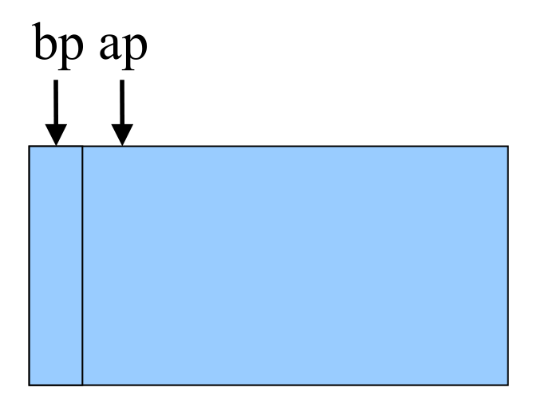
free(ap)로 넘겨준 주소로 사용자 데이터의 시작을 가리키고, bp는 그보다 헤더 한 칸 앞, 즉 블록의 진짜 시작을 가리킵니다. 사용자는 malloc이 돌려준 ap만 알고 있으므로 free는 먼저 ap에서 헤더 크기만큼 되돌아가 bp를 구해야 하며(슬라이드의 ‘Identify the start of entry’), 그래야 헤더에 적힌 블록 크기를 읽고 블록을 리스트에 넣을 수 있습니다.- 사용자는 메모리 블록을 가리키는 포인터를 넘깁니다.
void free(void *ap);free()함수는 블록을 리스트에 넣습니다.- 항목의 시작을 알아냅니다 —
ap에서 헤더 한 칸 앞, 즉bp입니다. - 자유 리스트에서의 위치를 찾습니다(1.10–1.11절).
- 리스트에 추가하되, 필요하면 항목들을 병합합니다(1.12–1.15절).
- 항목의 시작을 알아냅니다 —
free가 받는 정보는 주소 하나뿐입니다. 블록의 크기도, 리스트의 어디에 들어가야 하는지도 알려 주지 않습니다. 크기는 1.4절에서 본 것처럼 블록 앞에 남아 있는 헤더에서, 위치는 주소 순 리스트를 훑어서 알아냅니다.
1.10 free: 삽입 위치 찾기 (Free: Finding Location to Insert)
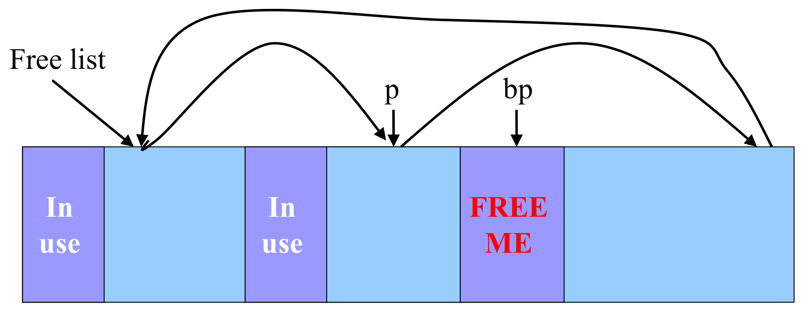
- 처음에서 시작합니다.
- 리스트를 차례로 따라갑니다.
- 해제할 원소보다 앞에 있는 마지막 항목에서 멈춥니다.
리스트가 주소 순이므로, ’해제할 블록보다 앞에 있는 마지막 자유 블록’이란 다음 조건을 만족하는 p입니다.
\[ p < bp < \mathrm{next}(p) \]
즉 bp가 p와 p의 다음 블록 사이의 주소에 놓이는 지점입니다. 그림에서는 두 번째 자유 블록이 그 p이고, bp는 그 바로 뒤에 삽입됩니다.
1.11 free: 경계 사례 처리 (Free: Handling Corner Cases)
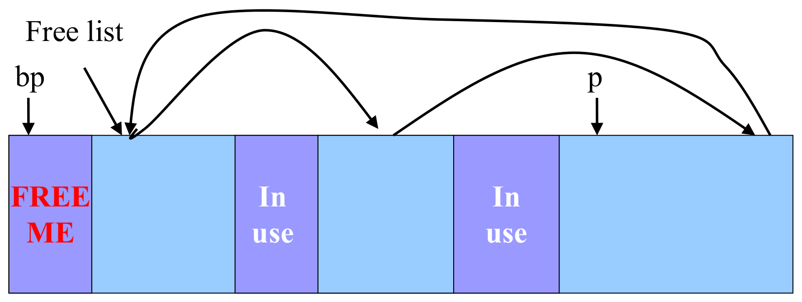
- 메모리에서의 되돌아옴(wrap-around)을 확인합니다.
- 해제할 블록이 자유 리스트의 첫 항목보다 앞에 있거나,
- 해제할 블록이 자유 리스트의 마지막 항목보다 뒤에 있는 경우입니다.
주소 순 원형 리스트에는 다음 포인터가 주소를 거꾸로 가리키는 연결이 정확히 하나 있습니다. 가장 높은 주소의 자유 블록(마지막 항목)에서 가장 낮은 주소의 자유 블록(첫 항목)으로 돌아가는 연결입니다. 해제할 블록이 모든 자유 블록보다 앞이나 뒤에 있으면 1.10절의 조건을 만족하는 p가 없으므로, 이 되돌아오는 연결을 따로 알아봐야 합니다.
| 상황 | p에서 성립하는 조건 |
삽입 결과 |
|---|---|---|
| 일반적인 경우 | \(p < bp < \mathrm{next}(p)\) | p와 p->next 사이 |
bp가 첫 항목보다 앞 |
\(p \ge \mathrm{next}(p)\) 이고 \(bp < \mathrm{next}(p)\) | 마지막과 첫 항목 사이 → bp가 새 첫 항목 |
bp가 마지막 항목보다 뒤 |
\(p \ge \mathrm{next}(p)\) 이고 \(bp > p\) | 마지막과 첫 항목 사이 → bp가 새 마지막 항목 |
\(p \ge \mathrm{next}(p)\)는 ’p가 되돌아오는 연결의 출발점, 즉 마지막 항목’이라는 뜻입니다. 두 경계 사례는 결국 같은 자리(마지막 항목 뒤, 첫 항목 앞)로 귀결되고, 다른 점은 삽입 후 bp가 주소상 맨 앞이 되느냐 맨 뒤가 되느냐뿐입니다.
1.12 free: 자유 리스트에 삽입하기 (Free: Inserting Into Free List)
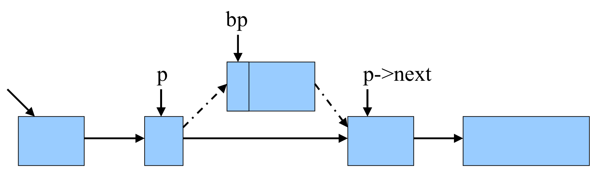
- 자유 리스트에 추가할 새 원소가 생겼습니다.
- 이전 항목과 다음 항목 사이에 삽입합니다.
- 그러나 병합할 기회가 있을 수 있습니다.
병합이 없다면 삽입은 포인터 두 개를 고치는 일입니다.
bp->next = p->next—bp가 원래의 다음 블록을 가리키게 합니다.p->next = bp—p가bp를 가리키게 합니다.
순서가 중요합니다. 2번을 먼저 하면 p->next에 있던 원래 다음 블록의 주소를 덮어써 잃어버립니다.
1.13 이웃과의 병합 (Coalescing With Neighbors)
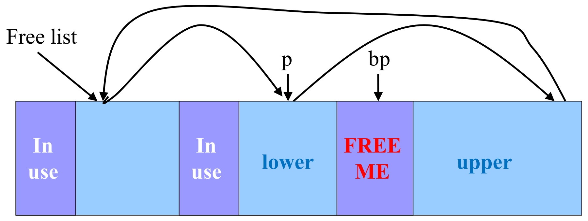
- 리스트를 훑으면 삽입 위치를 찾게 됩니다.
- 해제할 원소를 가리키는 포인터:
bp - 자유 리스트에서 그 앞 원소를 가리키는 포인터:
p
- 해제할 원소를 가리키는 포인터:
- 더 큰 자유 블록으로 병합합니다.
- 위쪽·아래쪽 이웃과 맞닿아 있는지 확인합니다.
병합이 없으면 무엇이 문제인지부터 봅시다. 맞닿은 두 자유 블록이 따로따로 리스트에 남아 있으면, 둘을 합친 크기의 요청이 와도 어느 한 블록도 그것을 받아 줄 수 없습니다. 연속된 빈 공간이 실제로 있는데도 할당이 실패하는 것으로, 8강의 외부 단편화를 공연히 악화시키는 셈입니다.
주소 순 리스트 덕분에 병합 후보는 둘뿐입니다. 아래쪽 이웃(lower neighbor)의 후보는 bp보다 낮은 주소의 가장 가까운 자유 블록인 p이고, 위쪽 이웃(upper neighbor)의 후보는 높은 주소의 가장 가까운 자유 블록인 p->next입니다. 맞닿아 있는지는 크기 산술로 확인합니다.
\[ \underbrace{bp + \mathrm{size}(bp) = \mathrm{next}(p)}_{\text{위쪽 이웃과 맞닿음}} \qquad\qquad \underbrace{p + \mathrm{size}(p) = bp}_{\text{아래쪽 이웃과 맞닿음}} \]
한 블록의 끝 주소(시작 + 크기)가 다른 블록의 시작 주소와 같으면, 둘 사이에 틈이 없다는 뜻입니다.
1.14 위쪽 이웃과 병합 (Coalesce With Upper Neighbor)
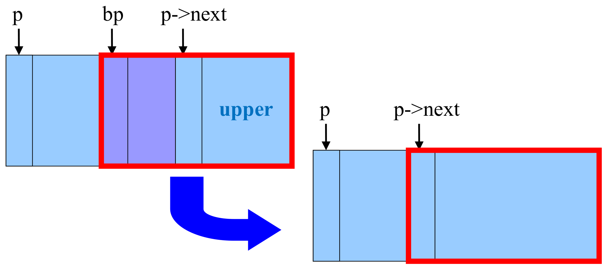
- 메모리의 다음 부분이 자유 리스트에 있는지 확인합니다.
- 그렇다면 하나의 더 큰 블록으로 만듭니다.
- 그렇지 않으면 단순히 다음 자유 원소를 가리키게 합니다.
| 조건 | 처리 |
|---|---|
| \(bp + \mathrm{size}(bp) = \mathrm{next}(p)\) | \(\mathrm{size}(bp) \leftarrow \mathrm{size}(bp) + \mathrm{size}(\mathrm{next}(p))\), \(\ \mathrm{next}(bp) \leftarrow \mathrm{next}(\mathrm{next}(p))\) |
| 그 외 | \(\mathrm{next}(bp) \leftarrow \mathrm{next}(p)\) |
병합하는 경우 bp가 위쪽 블록을 흡수합니다. 위쪽 블록의 헤더는 이제 bp 블록의 데이터 영역 한가운데에 놓인 의미 없는 바이트가 되고, 리스트에서는 bp가 위쪽 블록의 자리를 그대로 이어받아 그다음 블록을 가리킵니다.
1.15 아래쪽 이웃과 병합 (Coalesce With Lower Neighbor)
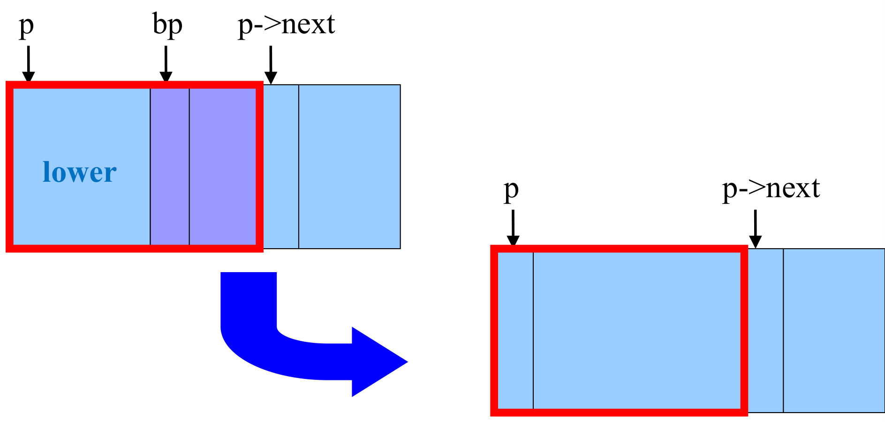
- 메모리의 이전 부분이 자유 리스트에 있는지 확인합니다.
- 그렇다면 하나의 더 큰 블록으로 만듭니다.
| 조건 | 처리 |
|---|---|
| \(p + \mathrm{size}(p) = bp\) | \(\mathrm{size}(p) \leftarrow \mathrm{size}(p) + \mathrm{size}(bp)\), \(\ \mathrm{next}(p) \leftarrow \mathrm{next}(bp)\) |
| 그 외 | \(\mathrm{next}(p) \leftarrow bp\) |
이번에는 p가 bp를 흡수합니다. 두 번째 줄(‘그 외’)은 1.12절의 p->next = bp 그대로이고, 첫 번째 줄의 \(\mathrm{next}(bp)\)는 1.14절에서 이미 정해 둔 값 — 위쪽과 병합했다면 위쪽 블록의 다음 블록, 아니라면 원래의 p->next — 입니다. 위쪽을 먼저 처리하는 순서 덕분에 두 절차가 자연스럽게 이어집니다.
두 검사를 조합하면 해제 후의 모습은 네 가지 중 하나입니다.
아래쪽(p)과 |
위쪽(p->next)과 |
결과 | 자유 블록 수 |
|---|---|---|---|
| 떨어짐 | 떨어짐 | bp가 p와 p->next 사이에 독립 블록으로 들어감 |
\(+1\) |
| 떨어짐 | 맞닿음 | bp가 위쪽을 흡수해 그 자리를 대신함 |
\(\pm 0\) |
| 맞닿음 | 떨어짐 | p가 bp를 흡수함 |
\(\pm 0\) |
| 맞닿음 | 맞닿음 | p가 bp와 위쪽을 모두 흡수함 (1.13절 그림의 상황) |
\(-1\) |
어느 경우든 해제가 끝나면 맞닿은 자유 블록이 하나도 남지 않습니다. 모든 free가 이 성질을 지키므로 해제 직전에도 이 성질이 성립한다고 가정할 수 있고, 그래서 bp의 양옆 두 블록만 검사하면 충분합니다.
1.16 K&R 방식의 강점 (Strengths of K&R Approach)
- 장점
- 코드가 단순합니다.
malloc()의 최적화- 큰 자유 블록을 분할해 공간 낭비를 막습니다(1.8절 그림).
free()의 최적화- 로빙 자유 리스트 포인터(roving free-list pointer)를 마지막으로 블록이 할당된 자리에 남겨 둡니다.
- 맞닿은 자유 블록을 병합해 단편화를 줄입니다(1.14절 그림).
슬라이드는 1.8절과 1.14절의 그림을 다시 붙여 두 최적화를 가리킵니다. 로빙 포인터는 1.6절의 next fit을 가능하게 하는 장치로, 리스트의 ’처음’을 고정해 두지 않고 최근에 작업한 자리를 따라 옮겨 다니는 포인터입니다. K&R 코드(freep)에서는 malloc뿐 아니라 free도 이 포인터에서 탐색을 시작하고, 끝나면 작업한 자리에 포인터를 남겨 둡니다. 1.10절의 슬라이드가 ’처음에서 시작한다’고 적었지만 원형 리스트에서는 어디서 출발하든 한 바퀴 안에 원하는 자리에 닿으므로, 출발점을 최근 위치로 옮겨도 정확성은 달라지지 않습니다.
1.17 K&R 방식의 약점 (Weaknesses of K&R Approach)
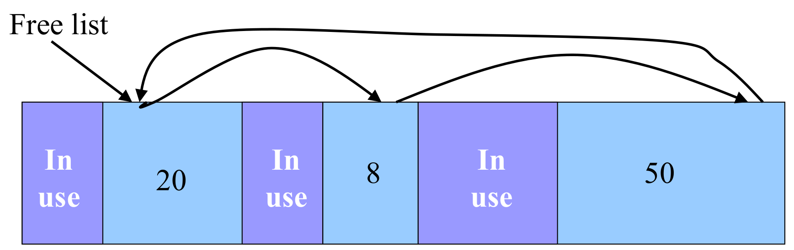
- 메모리를 비효율적으로 씁니다: 단편화(fragmentation)
- first-fit 정책은 메모리에 자유 블록의 ‘구멍(holes)’을 잔뜩 남길 수 있습니다.
- 실행 시간이 깁니다: 선형 시간 오버헤드
malloc()은 충분히 큰 블록을 찾으려고 자유 리스트를 훑습니다.free()는 블록을 넣을 자리를 찾으려고 자유 리스트를 훑습니다.
- 자유 리스트를 따라 넓은 범위의 메모리 주소에 접근합니다.
- 디스크와의 페이징(paging)을 대량으로 일으킬 수 있습니다.
세 약점은 서로 다른 층위의 문제입니다.
- 공간: first fit은 요청을 만족하는 첫 블록을 잘라 쓰므로, 요청보다 조금 큰 블록에서 떼어 낸 작은 자투리가 리스트 곳곳에 쌓입니다. 그림의 예에서는 자유 공간이 합쳐서 78이지만 51 이상의 요청은 실패합니다.
- 시간: 두 연산이 모두 자유 블록 수에 비례하는 시간을 씁니다. 특히
free의 탐색은 순전히 주소 순서를 지키기 위한 비용입니다. - 메모리 계층: 7강에서 보았듯 물리 메모리는 디스크의 캐시입니다. 자유 블록들은 힙 전체에 흩어져 있으므로 리스트를 한 번 훑는 일이 서로 다른 페이지를 여럿 건드리는 일이 되고, 그중 디스크로 밀려난 페이지가 있으면 그때마다 페이지 폴트가 일어납니다. 할당 요청 하나가 사용자와 전혀 상관없는 페이지들을 메모리로 끌어올리는 셈입니다.
2장은 이 중 시간 문제를 두 단계로 공략합니다.
3. 위험과 함정 (Perils and Pitfalls)
지금까지는 할당자를 만드는 쪽의 이야기였습니다. 이 장은 할당자를 쓰는 쪽에서 생기는 버그를 다룹니다. 1.2절에서 예고했듯 할당자의 장부가 사용자 메모리 바로 옆에 있으므로, 이런 버그는 종종 사용자 데이터만이 아니라 할당자 자체를 무너뜨립니다.
3.2 잘못된 포인터 역참조 (Dereferencing Bad Pointers)
고전적인 scanf 버그입니다.
int val;
…
scanf("%d", val); // ← &val이어야 한다: val의 (쓰레기) 값을 주소로 쓴다scanf는 읽은 값을 어디에 쓸지, 즉 주소를 인자로 받습니다. 그런데 여기서는 &val이 아니라 val을 넘겼으므로, scanf는 val에 들어 있던 값을 주소로 해석해 그곳에 정수를 씁니다. 게다가 val은 초기화되지 않았으니 그 값은 무엇이든 될 수 있습니다.
- 운이 좋으면: 그 값이 어떤 페이지에도 사상되지 않은 주소여서, 7강에서 본 주소 번역 단계에서 예외가 일어나고 프로그램이 세그먼테이션 폴트로 그 자리에서 죽습니다. 적어도 버그가 난 지점은 알 수 있습니다.
- 운이 나쁘면: 그 값이 우연히 쓰기 가능한 유효 주소여서, 전혀 상관없는 변수나 할당자의 헤더를 조용히 덮어씁니다. 증상은 한참 뒤 엉뚱한 곳에서 나타납니다.
고치는 법은 한 글자입니다 — scanf("%d", &val);. 형식 문자열과 인자 타입이 어긋나는 이런 실수는 대부분의 컴파일러가 경고(-Wall)로 알려 주므로, 경고를 무시하지 않는 것만으로도 상당수를 막을 수 있습니다.
3.3 초기화되지 않은 메모리 읽기 (Reading Uninitialized Memory)
힙 데이터가 0으로 초기화되어 있다고 가정하는 경우입니다.
// return y = Ax
int *matvec(int **A, int *x)
{
int *y = malloc(N*sizeof(int));
for (int i=0; i<N; i++)
for (int j=0; j<N; j++)
y[i] += A[i][j]*x[j]; // ← y[i]의 초깃값은 정해져 있지 않다
return y;
}의도한 계산과 실제로 일어나는 계산을 나란히 쓰면 차이가 분명합니다. \(y_i^{(0)}\)을 malloc 직후 y[i]에 들어 있던 값이라 하면,
\[ \underbrace{y_i = \sum_{j=0}^{N-1} A_{ij}\,x_j}_{\text{의도}} \qquad\text{vs.}\qquad \underbrace{y_i = y_i^{(0)} + \sum_{j=0}^{N-1} A_{ij}\,x_j}_{\text{실제}} \]
malloc은 블록의 내용을 건드리지 않고 돌려줍니다. 재사용된 블록이라면 이전 사용자가 남긴 값이 그대로 들어 있습니다.- 이 버그가 교활한 이유는 처음에는 멀쩡해 보인다는 점입니다. 운영체제가 힙을 늘리며 새로 내준 메모리는 보통 0으로 채워져 있어서, 프로그램 초반에는 \(y_i^{(0)} = 0\)이라 결과가 맞다가, 블록이 재사용되기 시작하는 시점부터 틀린 값이 나옵니다.
- 고치는 법: 0으로 초기화해 주는
calloc을 쓰거나, 안쪽 루프 전에y[i] = 0을 둡니다.
3.4 메모리 덮어쓰기 (Overwriting Memory)
슬라이드는 같은 제목 아래 네 가지 경우를 듭니다.
(1) 잘못된 크기의 객체 할당 — (Potentially) allocating the wrong sized object
int **p;
p = malloc(N*sizeof(int)); // ← int *가 N개 필요한데 int N개만큼만 잡는다
for (int i=0; i<N; i++) {
p[i] = malloc(M*sizeof(int));
}p는 int *의 배열이어야 하므로 필요한 크기는 N*sizeof(int *)입니다. 흔한 64비트 환경에서는 int가 4바이트, 포인터가 8바이트이므로
\[ \underbrace{N \cdot \texttt{sizeof(int)}}_{\text{할당: } 4N \text{ 바이트}} \;<\; \underbrace{N \cdot \texttt{sizeof(int *)}}_{\text{필요: } 8N \text{ 바이트}} \]
이고, 루프의 뒤쪽 절반(p[N/2]부터)은 블록 끝을 넘어 씁니다. 이번 강의의 할당자라면 그 자리에 다음 블록의 헤더가 있습니다. 슬라이드가 ’(Potentially)’라고 단서를 단 것은, int와 포인터의 크기가 같은 환경(예컨대 많은 32비트 시스템)에서는 이 코드가 우연히 동작하기 때문입니다. 버그는 코드를 다른 환경으로 옮기는 날까지 잠복합니다. 고치는 법은 malloc(N*sizeof(int *))입니다.
(2) 할당된 버퍼의 최대 크기를 확인하지 않음 — Not checking the maximum size of the allocated buffer
char s[8];
int i;
gets(s); /* reads "123456789" from stdin */"123456789"는 9글자에 문자열 끝의 NUL 문자까지 10바이트인데 s는 8바이트이므로, 2바이트가 배열 밖, 즉 s 바로 옆의 메모리를 덮어씁니다. gets는 버퍼의 크기를 인자로 받지 않으므로 이 넘침을 막을 방법이 원천적으로 없습니다.
- 고전적인 버퍼 오버플로 공격의 기반입니다.
- 1988년 인터넷 웜: 이른바 모리스 웜이 퍼진 경로 가운데 하나가,
fingerd데몬이gets로 입력을 받는 점을 노린 버퍼 오버플로였습니다. - 웹 서버에 대한 현대의 공격들
- AOL/Microsoft 메신저 전쟁: AOL이 자사 AIM 클라이언트에 있던 버퍼 오버플로 버그를 이용해 정품 클라이언트를 가려내는 방식으로, Microsoft 메신저의 AIM 서버 접속을 막은 사건입니다.
- 1988년 인터넷 웜: 이른바 모리스 웜이 퍼진 경로 가운데 하나가,
- 고치는 법: 버퍼 크기를 받는
fgets(s, sizeof s, stdin)을 씁니다.gets는 C11 표준에서 아예 삭제되었습니다.
(3) 포인터 산술에 대한 오해 — Misunderstanding pointer arithmetic
int *search(int *p, int val)
{
while (*p && *p != val)
p += sizeof(int); // ← 원소 sizeof(int)개씩 건너뛴다
return p;
}1.7절의 경고가 그대로 적용됩니다. p가 int *이므로 p += k는 주소를 \(k\)개의 int만큼 옮깁니다. 그러니 p += sizeof(int)는 한 원소가 아니라 sizeof(int)개(4바이트 int라면 4개)의 원소를 건너뜁니다.
- 원소를 네 개 중 하나씩만 검사하므로
val을 놓칠 수 있습니다. - 배열 끝을 표시하는 0마저 건너뛸 수 있고, 그러면 루프는 배열 밖을 계속 읽어 나갑니다.
- 결국 반환되는 포인터가 배열 밖을 가리킬 수 있고, 호출자가 그 포인터로 값을 쓰는 순간 관계없는 메모리를 덮어씁니다. 슬라이드가 이 예를 ’덮어쓰기’로 분류한 이유입니다.
고치는 법은 p++입니다.
(4) 포인터가 가리키는 객체 대신 포인터를 참조 — Referencing a pointer instead of the object it points to
int *BinheapDelete(int **binheap, int *size)
{
int *packet;
packet = binheap[0];
binheap[0] = binheap[*size - 1];
*size--; // ← *(size--)로 해석되어 포인터 size가 줄어든다
Heapify(binheap, *size, 0);
return(packet);
}의도는 ‘힙의 원소 수를 하나 줄인다’, 즉 size가 가리키는 정수를 1 줄이는 것입니다. 그러나 C에서 후위 --는 단항 *보다 우선순위가 높으므로 *size--는
\[ \texttt{*size--} \;\equiv\; \texttt{*(size--)} \]
로 해석됩니다. 정수를 읽기만 하고(그 값은 버려집니다) 포인터 size 자체를 한 칸(int 하나만큼) 앞으로 옮기는 것입니다.
- 호출자가 가진 원소 수는 줄지 않습니다.
- 다음 줄의
Heapify(binheap, *size, 0)은 원래 정수의 바로 앞 메모리를 원소 수로 읽습니다. 그 값이 엉뚱하게 크다면Heapify가 배열 밖을 읽고 쓰게 됩니다.
고치는 법은 괄호 한 쌍, (*size)--입니다.
네 경우 모두, 넘친 쓰기가 힙 블록의 경계 밖에서 일어나면 그 자리에는 대개 이웃 블록의 헤더나 푸터가 있습니다. 2장의 설계에서는 그 태그에 블록 크기와 자유 리스트 포인터가 들어 있으므로, 사용자의 쓰기 한 번이 할당자의 장부를 고쳐 버립니다. 크래시는 그 자리에서가 아니라 나중에 어떤 malloc이나 free가 망가진 태그를 믿고 움직일 때 일어나며, 겉보기에는 할당자의 버그처럼 보입니다. 2.10절의 검사 함수와 3.9절의 도구가 필요한 이유가 여기에 있습니다.
3.5 존재하지 않는 변수 참조 (Referencing Nonexistent Variables)
함수가 반환하면 지역 변수가 사라진다는 사실을 잊은 경우입니다.
int *foo (void)
{
int val;
return &val; // ← 반환 즉시 사라질 지역 변수의 주소
}val은 foo의 지역 변수라 foo의 스택 프레임 안에 놓이고, foo가 반환하는 순간 그 프레임은 해제됩니다. 그런데 반환된 주소는 여전히 스택 영역 안의 유효한 주소이므로, 역참조해도 즉시 크래시하지 않습니다. 이것이 이 버그를 위험하게 만듭니다.
- 다음 함수 호출이 같은 스택 영역을 자기 프레임으로 재사용하므로, 그 주소의 값은 곧 다른 함수의 지역 변수 같은 것으로 바뀝니다.
- 반대로 그 주소에 쓰기를 하면 지금 실행 중인 다른 함수의 프레임을 망가뜨립니다.
값을 함수 밖으로 넘겨야 한다면 값 자체를 반환하거나, 호출자가 마련한 공간에 쓰거나, 수명이 호출을 넘어 이어져야 한다면 malloc으로 힙에 만들어야 합니다. 이런 코드는 대부분의 컴파일러가 ’지역 변수의 주소를 반환한다’는 경고로 알려 줍니다.
3.6 블록을 여러 번 해제하기 (Freeing Blocks Multiple Times)
현대 버전의 glibc는 이 오류를 잡아냅니다.
x = malloc(N*sizeof(int));
// manipulate x
…
free(x);
y = malloc(M*sizeof(int));
// manipulate y
…
free(x); // ← 같은 블록을 두 번째로 해제첫 번째 free(x)로 블록은 자유 리스트에 돌아갔습니다. 두 번째 free(x)가 무엇을 망가뜨리는지는 그 사이에 무슨 일이 있었는지에 따라 갈립니다.
- 블록이 아직 자유 리스트에 있다면: 같은 블록을 리스트에 또 넣게 됩니다. 이 강의의 할당자로 치면, 이미 리스트에 있는 블록을 다시 끼워 넣거나 이미 이웃과 병합되어 의미를 잃은 헤더를 다시 믿는 셈이어서, 리스트의 연결과 크기 정보가 서로 모순에 빠집니다. 그 뒤로는 같은 블록이 두 번 할당되는 일도 가능해집니다.
- 그 사이
y = malloc(...)이 그 블록을 받아 갔다면: 두 번째free(x)는 사실상y의 블록을 해제합니다.y는 여전히 그 메모리를 쓰고 있는데 할당자는 그것을 자유 블록으로 여기고, 다음malloc이 같은 블록을 또 다른 곳에 내줍니다.
glibc가 감지할 수 있는 것은 기껏해야 첫 번째 시나리오, 즉 이미 자유 상태인 블록을 다시 해제하는 경우이며, 그것도 할당자가 검사하는 몇몇 패턴에 걸릴 때입니다. 두 번째 시나리오에서 할당자가 보는 것은 ’지금 사용 중인 블록의 정상적인 해제’일 뿐이어서 구별할 방법이 없습니다. 슬라이드의 코드가 바로 이 모양 — 두 free 사이에 malloc이 끼어 있는 모양 — 이라는 점에 주의해야 합니다.
흔한 방어책은 해제 직후 포인터를 비워 두는 것입니다(free(x); x = NULL;). C 표준에서 free(NULL)은 아무 일도 하지 않으므로, 실수로 한 번 더 해제해도 무해해집니다.
3.7 해제된 블록 참조 (Referencing Freed Blocks)
크래시할 수도 있고 하지 않을 수도 있으며, 틀린 결과로 이어집니다.
x = malloc(N*sizeof(int));
// manipulate x
…
free(x);
y = malloc(M*sizeof(int));
for (i=0; i<M; i++)
y[i] = x[i]++; // ← 이미 해제된 x를 읽고 쓴다free(x) 이후의 x는 허상 포인터(dangling pointer)입니다. 주소 값은 그대로지만 그 메모리는 더 이상 x의 것이 아닙니다.
- 블록이 자유 리스트에 있다면: 그 메모리는 이제 할당자의 영역입니다. 1.2절의 결정 — 장부를 자유 블록 안에 적는다 — 때문에,
x[i]++는 할당자의 크기와 포인터를 직접 고치는 쓰기가 될 수 있습니다. 게다가M > N이라면x[i]는 원래 블록의 끝마저 넘어갑니다. y가 그 블록을 받아 갔다면:x와y가 같은 메모리를 가리키므로,y[i] = x[i]++는y의 값을 읽어 다시y에 쓰는 뒤죽박죽이 됩니다.
이 유형은 흔히 해제 후 사용(use-after-free)이라고 부릅니다. 어느 시나리오가 일어날지가 다른 곳의 malloc/free 순서에 달려 있으므로, 같은 코드가 실행할 때마다 다르게 틀릴 수 있습니다.
3.8 블록 해제 실패 (Failing to Free Blocks)
(1) 해제하지 않고 반환하기 — 메모리 누수
메모리 누수(memory leak): 오래 도는 프로그램(웹 서버 등)은 결국 메모리가 바닥나 죽습니다.
foo(void)
{
int *x = malloc(N*sizeof(int));
…
// never free x
…
return;
}foo가 반환하면 x에 담겨 있던 주소를 아는 곳이 어디에도 남지 않습니다. 블록은 여전히 할당된 상태지만 누구도 해제할 수 없으므로, 프로세스가 끝날 때까지 되찾을 수 없습니다.
- 프로세스가 끝나면 주소 공간 전체가 운영체제에 반환되므로, 금방 끝나는 프로그램에서는 누수가 드러나지 않습니다.
- 그러나 오래 도는 프로그램에서
foo가 요청마다 한 번씩 불린다면, 새는 양이 호출 횟수에 비례해 쌓여 결국 메모리가 바닥납니다.
(2) 자료구조의 일부만 해제하기
메모리 누수: 자료구조의 일부만 해제하는 경우입니다.
struct list {
int val;
struct list *next;
};
foo(void)
{
struct list *head = malloc(sizeof(struct list));
head->val = 0;
// create and manipulate the rest of the list
head->next = malloc(sizeof(struct list));
…
free(head); // ← 첫 노드만 해제된다
return;
}free(head)는 첫 노드 하나만 해제합니다. 둘째 노드부터는 첫 노드의 next 필드를 통해서만 닿을 수 있었는데, 그 필드가 든 블록이 해제되면서 길이 끊겼습니다. 그렇다고 free(head) 뒤에 head->next를 읽는 것도 답이 아닙니다 — 그것은 3.7절의 해제된 블록 참조입니다. 올바른 해제는 노드마다 다음 노드의 주소를 먼저 저장한 뒤 현재 노드를 해제하며 리스트 끝까지 가는 것입니다.
3.9 메모리 버그 다루기 (Dealing With Memory Bugs)
- 일반 디버거 (gdb)
- 잘못된 포인터 역참조를 찾는 데 좋습니다.
- 다른 메모리 버그는 탐지하기 어렵습니다.
- 내부 malloc 추적(internal malloc tracing)
mtrace(),muntrace()
- 메모리 디버거 (valgrind)
- 메모리 할당과 누수에 대한 자세한 정보를 얻습니다.
| 도구 | 동작 방식 | 강한 곳 | 한계 |
|---|---|---|---|
| gdb | 멈춘 프로그램의 상태(스택, 변수)를 보여 줌 | 잘못된 역참조: 세그먼테이션 폴트가 난 바로 그 명령에서 멈춤 | 크래시 없이 조용히 진행되는 버그에는 멈출 지점이 없음 |
mtrace() / muntrace() |
glibc가 두 호출 사이의 malloc/free 기록을 환경 변수 MALLOC_TRACE가 지정한 파일에 남김 |
해제되지 않은 할당(누수), 할당된 적 없는 메모리의 해제 | 할당·해제 호출만 볼 뿐 메모리 접근은 보지 않음 |
| valgrind | 프로그램을 가상 CPU 위에서 실행하며 모든 메모리 접근을 검사 | 힙 블록 경계 밖 접근, 해제된 블록 접근, 초기화되지 않은 값의 사용, 잘못된 free, 종료 시점의 누수 |
실행이 크게 느려짐. 스택·전역 배열의 경계 밖 접근은 잡지 못하는 경우가 많음 |
gdb가 잘 잡는 것은 그 자리에서 크래시하는 버그뿐입니다. 3.1절의 일곱 가지 중 잘못된 역참조를 뺀 나머지는 대부분 버그가 일어나는 순간에 아무 일도 일어나지 않고, 증상은 나중에 엉뚱한 곳에서 나타납니다. 그때 gdb가 보여 주는 것은 증상이 난 자리이지 원인이 된 자리가 아닙니다. valgrind가 느린 대가를 치르면서 모든 접근을 들여다보는 이유가 바로 이 거리를 없애기 위해서입니다 — 잘못된 쓰기가 일어나는 바로 그 순간을 보고하기 때문입니다.
4. 요약 (Summary)
4.1 명시적 자유 리스트 요약 (Explicit Free Lists Summary)
- 암묵적 리스트와 비교하면
- 할당이 전체 블록 수가 아니라 자유 블록 수에 비례하는 선형 시간입니다.
- 메모리 대부분이 차 있을 때 훨씬 빠릅니다.
- 블록을 리스트에 끼워 넣고 떼어 내야 하므로 할당과 해제가 조금 더 복잡합니다.
- 링크(next, 또는 prev/next)를 위한 약간의 추가 공간이 듭니다.
- 내부 단편화를 늘리지는 않습니다: 링크는 블록이 자유 상태일 때만 필요하기 때문입니다.
- 효율적인 병합을 위해 헤더와 푸터를 둡니다.
- 할당이 전체 블록 수가 아니라 자유 블록 수에 비례하는 선형 시간입니다.
첫 번째 불릿을 식으로 쓰면 다음과 같습니다.
\[ T_{\text{malloc}}^{\text{implicit}} = O(N_{\text{전체}}), \qquad T_{\text{malloc}}^{\text{explicit}} = O(N_{\text{자유}}), \qquad N_{\text{자유}} \le N_{\text{전체}} \]
메모리가 거의 다 차 있으면 \(N_{\text{자유}} \ll N_{\text{전체}}\)이므로 차이가 벌어집니다. 1.3절에서 암묵적 리스트가 ’거의 다 할당된 상태에서 특히 비효율적’이라고 한 말의 뒷면입니다.
슬라이드의 주장은 링크를 자유 블록의 데이터 영역에 겹쳐 둘 때 성립합니다. 할당된 동안에는 사용자 데이터가 그 자리를 쓰고, 자유 블록이 되면 같은 자리에 링크를 적으므로 링크가 따로 공간을 차지하지 않습니다. 다만 그러려면 어떤 블록이든 자유 블록이 되었을 때 링크를 담을 수 있을 만큼 커야 합니다. 그 결과 최소 블록 크기가 커지고, 그보다 작은 요청은 최소 크기까지 올림되므로, 아주 작은 요청이 많은 프로그램에서는 그만큼 내부 단편화가 생길 수 있습니다.
4.2 비닝 요약 (Binning Summary)
- 서로 다른 크기 클래스(size class)나 객체별로 별도의 명시적 자유 리스트를 유지합니다.
- 블록은 분할·병합될 때 크기 클래스 사이를 옮겨 다닙니다.
- 장점
- 명시적 자유 리스트보다 처리량(throughput)이 높습니다.
- 크기 클래스를 2의 거듭제곱으로 나누면 로그 시간이 됩니다.
- 메모리 활용률(memory utilization)이 더 좋습니다.
- 분리 자유 리스트에 대한 first-fit 탐색은 힙 전체에 대한 best-fit 탐색을 근사합니다.
- 명시적 자유 리스트보다 처리량(throughput)이 높습니다.
클래스 사이의 이동. 2.8절에서 크기 5 블록을 잘라 4를 내주고 남은 1이 bin 1로 옮겨 간 것처럼, 분할된 나머지는 자기 크기에 맞는 클래스로 옮겨 가야 합니다. 병합도 마찬가지여서, 합쳐질 블록들을 각자의 클래스에서 떼어 낸 뒤 합친 결과를 새 크기의 클래스에 넣습니다. 2장에서 리스트를 이중 연결로 만들어 둔 덕분에 이 떼어 내기가 상수 시간입니다.
왜 로그 시간인가. 크기 클래스를 2의 거듭제곱 경계로 나눈다고 합시다.
\[ C_k = \{\, s \;:\; 2^{k-1} < s \le 2^{k} \,\}, \qquad k = 0, 1, 2, \dots \]
크기 \(n\)인 요청은 클래스 \(k(n) = \lceil \log_2 n \rceil\)에 속하고, 그보다 한 단계 이상 위 클래스의 블록은 크기가 모두 \(2^{k(n)} \ge n\)보다 크므로 무엇이든 요청을 담을 수 있습니다. 그러니 최악의 경우에도 클래스 안을 뒤질 필요 없이 비어 있지 않은 클래스를 찾을 때까지 위로 올라가기만 하면 되고, 가장 큰 블록의 크기를 \(M\)이라 할 때 클래스의 수는
\[ K = \lceil \log_2 M \rceil + 1 = O(\log M) \]
이므로 탐색이 로그 시간으로 묶입니다. 자기 클래스 안의 블록은 요청보다 작을 수도 있다는 점(예: \(C_3 = \{5, 6, 7, 8\}\)에서 7을 요청했는데 5만 있는 경우)이 ’한 단계 위’를 보는 이유입니다.
best fit이 고를 블록은 요청을 담을 수 있는 가장 작은 블록입니다. bin들은 크기 구간으로 자유 블록을 나누고 있으므로, 그 블록은 요청을 담을 수 있는 블록이 들어 있는 첫 bin 안에 있습니다. 분리 자유 리스트의 first fit도 바로 그 bin에서 처음 만나는 적합한 블록을 고르므로, 두 선택은 같은 bin 안에 있고 크기 차이는 bin의 폭을 넘지 않습니다. 한계 이하의 정확 적합 bin처럼 폭이 없는 bin에서는 둘이 정확히 일치하며, 2.9절에서 5-6 bin의 first fit이 6을, best fit이 5를 고르는 차이가 바로 이 ’폭 이내’의 오차입니다.
4.3 할당자에 대한 추가 자료 (More Info on Allocators)
- D. Knuth, The Art of Computer Programming, 2nd edition, Addison Wesley, 1973
- 동적 저장 공간 할당(dynamic storage allocation)에 관한 고전적 참고서입니다.
- Wilson et al., “Dynamic Storage Allocation: A Survey and Critical Review”, Proc. 1995 Int’l Workshop on Memory Management, Kinross, Scotland, Sept. 1995
정리하며 (Closing Remarks)
이번 강의의 논증 사슬을 단계별로 압축하면 다음과 같습니다.
| 단계 | 내용 | 근거 |
|---|---|---|
| ① 순환 문제 | 힙 관리자는 자유 블록의 장부를 힙에 두어야 하지만, 그 공간을 malloc/free로 얻거나 돌려줄 수 없다 |
An Implementation Challenge |
| ② 자기 수용 | 장부를 자유 블록 자신의 안에 적는다 — 장부의 크기가 자유 블록 수를 저절로 따라간다 | Store Information in the Free Block |
| ③ 암묵적에서 명시적으로 | 크기만 적으면 모든 블록을 밟아야 하므로, 헤더에 다음 자유 블록 포인터를 둔다 | Implicit / Explicit Free List |
| ④ 리스트의 모양 | 원형으로 이어 어디서든 탐색을 이어 가고, 주소 순으로 유지해 병합 후보를 리스트 이웃 둘로 좁힌다 | Free List: Circular Linked List |
| ⑤ malloc | first fit(+next fit)으로 찾고, 꼭 맞으면 prev->next = p->next로 떼어 내고, 크면 꼬리를 잘라 연결을 건드리지 않는다 |
Malloc: First-Fit / Perfect Fit / Big Block |
| ⑥ free의 자리 찾기 | ap에서 헤더 한 칸 앞의 bp로 블록을 되찾고, \(p < bp < \mathrm{next}(p)\) 또는 되돌아오는 연결에서 자리를 찾는다 |
Free / Finding Location / Corner Cases |
| ⑦ 병합 | 위쪽(\(bp + \mathrm{size}(bp) = \mathrm{next}(p)\))을 먼저, 아래쪽(\(p + \mathrm{size}(p) = bp\))을 다음에 합쳐 맞닿은 자유 블록을 남기지 않는다 | Coalescing With Neighbors / Upper / Lower |
| ⑧ K&R의 손익 | 코드는 단순하지만 구멍이 쌓이고, 두 연산이 모두 선형 시간이며, 흩어진 리스트가 페이징을 부른다 | Strengths / Weaknesses of K&R Approach |
| ⑨ free를 상수 시간으로 | 헤더·푸터로 메모리상 이웃에 산술로 접근하고, 이중 연결로 어느 블록이든 즉시 떼어 내며, 새 블록은 맨 앞에 넣는다 | Faster Free / Size·Pointers / Efficient Free |
| ⑩ malloc의 탐색 줄이기 | 탐색이 긴 근원은 크기의 다양성이다 — 자유 블록을 크기별 bin으로 나눈다 (정확 적합 vs 범위) | But Malloc is Still Slow / Binning Strategies |
| ⑪ 할당자 디버깅 | 버그는 헤더·푸터를 짓밟아 흔적을 지우므로, 조금씩 쓰고 assert와 불변식 검사를 넉넉히 두고 그림을 그린다 |
Suggestions for Assignment #3 |
| ⑫ 할당자를 쓰는 쪽의 버그 | 잘못된 역참조, 초기화되지 않은 읽기, 덮어쓰기, 사라진 변수, 이중 해제, 해제 후 사용, 누수 — 메모리 시스템과 C에 대한 오해의 조합이다 | Memory-Related Perils and Pitfalls in C |
| ⑬ 도구 | 크래시하는 버그는 gdb로, 누수는 mtrace로, 조용한 버그 전반은 valgrind로 잡는다 | Dealing With Memory Bugs |
| ⑭ 요약 | 명시적 리스트는 할당 비용을 자유 블록 수로 줄이고, 비닝은 처리량과 활용률을 함께 올린다 — first fit이 best fit에 가까워진다 | Explicit Free Lists Summary / Binning Summary |